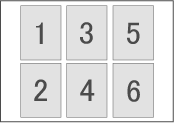

You can print a variety of ID photos.
 Important
ImportantThe photo may not qualify as an official ID photo depending on its use.
For details, contact the party to whom you will be submitting the photo.
To print ID photos, select 4"x6" 10x15cm for Paper Size in the Select Paper screen, and select a layout of the ID photo from the layouts in the Layout/Print screen.
 Note
NoteThe number of frames per page varies depending on the size of the ID photo to create. Check the number of frames in the layouts displayed in the Layout/Print screen, then specify the number of copies in the Select Images screen.
You can select two or more images and print different types of ID photos on one page.
Refer to the following section for details on how to select photos.
Photos are arranged in the following order.
Example: ID Photo 3.5x4.5cm

You can change the printing order in Printing Order on the Print tab of the Preferences dialog.
You can select the printing order from By Date, By Name, and By Selection.
To display the Preferences dialog, click  (Settings) or select Preferences... from the File menu.
(Settings) or select Preferences... from the File menu.
ID photos can only be printed on 4"x6" 10x15cm paper.